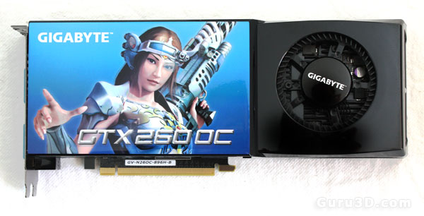

GTX260 porzera durzo prond(182W)

| VRAM: |
866MB DD3 (ZAZWYCZAJ) |
| Pobur prądu: |
182W (+/-) |
| Złącze zasilania |
X2 6pin |
tu GPU-Z:
Atu link do TEHPOWERUP:
GTX260 SPEC
- karta pobiera durzo prondu z powodu rdzenia
- karta posiada
ddr3 z 896mb co w tamtyh czasah durzo nie było ale wystarczajonca na tle innyh karta
tu wnęczę karty razem z czeszczenirm⬇
tu galeria podobnyh modeli (innyh wydawcuw):
spec karty ⬆
spec karty ⬆
spec karty ⬆
więcej zdjęć